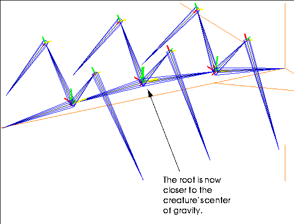

[N-World Contents] [Book Contents] [Prev] [Next] [Index]
Building Skeletons
This chapter describes how to build your own humanoid and non-humanoid skeletons.
In this Chapter
You'll learn how to:
Using the Skeleton Primitive
N-Geometry can generate a ready-to-use complete skeleton with just a couple of mouse clicks:
1. (CLICK-L) on GeoMenus>New Object>Skeleton.
- This generates a humanoid skeleton with its root at the global center:
Figure 2.1 Skeleton primitive
Parts of a Skeleton
Before we begin a more detailed discussion of skeletons, we need to agree on some terminology. Figure 2.2 and the text that follows describes some basic elements to the Skeletal Animation System.
Figure 2.2 Parts of a skeleton
Bone
Bones are the individual segments that are connected together to form a skeleton. The skeleton is the stick figure that you use to design the actual animation of the 3D object.
Bone Axis
Each bone has local X, Y, and Z axes. Typically, one of these axes is aligned with the length of the bone; this axis is referred to as the bone direction axis or twist axis. Note also that the axes are color coded:
When you modify the position of a bone, having the local axes follow the orientation of the bone is optional. However, the local axes for a bone always change if the bone's superior moves.
For example, in a humanoid skeleton, if you move the humerus (upper arm) bone, the xyz axes for the forearm, wrist, and any bones in the hand are updated automatically because the humerus is superior to those bones.
Bone Frame
The bone frame is a blue "pyramid" drawn around a segment that identifies it as a bone. It makes it easier to see and indicates the "direction" of the bone (the "base" of the pyramid always leads back to the root).
Joint
Each bone is defined by two joints, one at each end. The further from the root is referred to as the inferior of the bone (the pointy end of the bone frame), the end closer to the root as the superior (the wide end of the bone frame).
Root
The root is the "logical" center of the skeleton; any bone can be traced along a single path back to the root. The root is not a "joint" per se, as it cannot be manipulated like other joints.
Typically, the root corresponds to the center of gravity for the skeleton. For a humanoid, this is at the base of the spine.
- Note. No loops are allowed in a skeleton-you must be able to trace a joint back to the root along only one path.
Wire
As mentioned in the section on bone frame above, the skeleton is actually a series of joined wires. You can toggle the display of the bone frames by choosing the skeleton and using (CLICK-M) on Display Bone.
Figure 2.3 Left, bone frame on; right, bone frame off
Additional definitions of terms used in the Skeletal Animation System are included at the beginning of the Skeletal Animation System Reference Guide.
Building a Humanoid Skeleton
If you want to build your own custom skeleton from scratch by creating a series of encoded wires, then joining those wires together to form a skeleton.
Follow the steps below to create a simple humanoid skeleton.
+Z Orientation of the Skeletal Animation System
The skeletal animation system in general is based on the skeleton facing a +Z direction. While all the operations described in the SAS work on a skeleton regardless of its orientation, they are most intuitive if the skeleton is oriented along that direction.
Figure 2.4 Skeleton primitive
Building the Spine
The first wire that you'll encode for our humanoid contains three bones when it's complete; the spine, the neck, and the head. This wire should be built so that the base of the spine (which is the center of gravity for a humanoid) starts on the global center coordinates.
- Note. The beginning point for a skeleton is also known as its "root." The root should be aligned with the skeleton's center of gravity; for a humanoid, this is typically the base of the spine.
To build the spine:
1. Move the cursor over the Nichimen Geometry window.
2. Press "z" on the keyboard so that you are looking directly along the z axis.
- If you're looking straight along the axis, it's easier to build the skeleton symmetrically.
3. (CLICK-R) on the N-Geometry window.
4. (CLICK-L) on File>New Object>Wire.
5. (CLICK-L) once on the global center coordinates.
- When you select to encode a wire, the cursor moves to this position automatically.
Figure 2.5 Starting the wire
6. Drag the mouse up along the y-axis and (CLICK-L) to create the first segment on the wire (for the spine itself).
7. Drag up along the y-axis again, then (CLICK-L) to create the segment for the neck.
8. (CLICK-L) and drag up a final time to create the head bone.
- Essentially, you (CLICK-L) each time you want to create a bone joint. For a humanoid, the spine usually has three bones (the spine, neck, and head):
Figure 2.6 Encoding the wire for the spine
9. (CLICK-R) when you're done.
10. In the dialog box that appears, name the wire.
- Choose a name like "spine" and (CLICK-L) on Add Wire.
Encode the Wire for the Left Arm
The next step in building your skeleton is to create an arm and a leg. Let's start by building the left arm.
When you draw the arm, start from the top of the upper arm and draw down. When you join the arm to the spine (creating a bone between the upper arm and the neck), the "joining" wire is created between the beginning of the arm wire and the selected joint on the spine wire.
11. Encode a wire with three segments to represent the skeleton's left arm.
- Following the same steps described above for building the spine, encode the wire for the left arm. Start the wire so that it is roughly parallel to the joint that represents the top of the spine. It should look something like this when you're done:
Figure 2.7 Encoding the wire for the arm
Encode the Wire for the Left Leg
12. Encode a wire with three segments to represent the left leg.
- This time, start the wire so that it is roughly parallel to the joint that represents the base of the spine (somewhere along the x-axis). The leg wire should also have three segments, one each to represent the femur, tibia, and foot:
Figure 2.8 Encoding the wire for the leg
Duplicate the Arm and Leg Wires
Rather than build additional wires from scratch, we can take advantage of some of N-Geometry's tools to mirror the left arm and leg wires for the right arm and leg. This ensures that our skeleton stays symmetrical.
13. (CLICK-L) on bodies in the element sensitivity menu along the top of the N-Geometry window.
14. (SHIFT-L) on the left arm wire.
15. (CLICK-R) on Copy.
- This creates a duplicate of the object in the same location as the original. When prompted, give the duplicate an appropriate name, such as "right-arm".
16. (SHIFT-L) on the right arm wire.
17. (CTRL-L) on Axis Scale.
18. (CLICK-L) on X.
19. CLICK-L on Origin.
20. Enter a value of -1 in the dialog box that appears.
- The right arm wire is translated around the global origin along the x-axis by a factor of -1, essentially mirroring the position of the left arm.
21. (CLICK-L) on the Axis-Scale button in the dialog box.
22. Repeat this process for the left leg.
- Note. If you have trouble selecting either the right-arm or right-leg wires, you can temporarily turn off the sensitivity or the visibility of the left-arm or left-leg wires from the main menu, so that you can select the correct wires.
At this point, you should have five wires; the spine, the right and left arms, and the right and left legs. The right and left arm and leg wires should mirror each other along the x-axis. The wires should look something like this:
Figure 2.9 Five wires
Convert the Spine Wire into a Skeleton
At this point, you still have nothing more than a series of encoded wires. You build the skeleton by converting the spine wire into a series of connected bones and attaching the arm and leg wires to the appropriate joints along the spine.
23. (CLICK-L) on bodies in the element sensitivity menu along the top of the N-Geometry window.
24. (SHIFT-L) on the spine wire.
- (CLICK-L) on the Skeleton command.
25. Give the skeleton a name, or (CLICK-L) on Done to accept the default.
- The default, "Skeleton-from-wirename," is useful because it tells you which wire the bones were generated from.
- This changes the segments along the selected wire into individual bones. Converting the wire into a bone automatically hides the selected wire, instead displaying thin, blue, four-sided pyramid shaped "bone frames" to indicate that the segment is a bone:

Figure 2.10 Spine wire converted into a bone
Connecting the Arms and Legs to the Skeleton
Let's start by connecting the left arm to the top of the spine. When you join a wire to an existing joint on a bone, an additional bone is created between the selected joint and the beginning of the selected wire.
26. (CLICK-L) on points in the element sensitivity menu along the top of the N-Geometry window.
27. (SHIFT-L) on the joint that joins the spine and the neck on the Spine wire.
28. (CLICK-L) on Connect.
29. (CLICK-L) on the left-arm bone.
- The left-arm wire is converted into a bone, and again, the bone frame is displayed in place of the underlying wire. Note that an adjoining bone is created between the selected joint and the selected wire.
Figure 2.11 Attaching a wire to the spine
- Note. If you don't want to create an intervening bone, align the starting joint of the wire with the selected joint on the skeleton (you can do this with the Position command). Alternately, you can use the Collapse command to get rid of any bones you don't want.
30. Join the rest of the bones to the skeleton using the same process outlined in steps 26 through 28.
- Attach the right arm to the same joint as the left; attach the two leg wires to the joint at the base of the spine (forming the hips in the process). When you're done creating the skeleton, it should look something like Figure 2.12:
Figure 2.12 Completed skeleton
Building a Custom Skeleton
Of course, you're not limited to generating humanoid skeletons in the Skeletal Animation System. In fact, you can build skeletons of any complexity, with the single caveat that no loops are permitted. Take a look at the following object, for example:
/usr/local/ngc/demo/objects/spider.geo
Note that the creature has several legs, additional "vertebrae:"
Figure 2.13 A sample spider skeleton
There are several commands that will be quite useful if you are creating custom skeletons:
Each of these commands is described in the following sections
Adding Bones
The Add command can be used to "grow" a bone from a selected joint. To add a bone:
1. Create a skeleton.
2. (SHIFT-L) on the joint you want to add the bone to.
- The cursor changes into a crosshair.
3. (CLICK-L) at the point where the bone should end.
- The new bone is added on to the skeleton; you can continue to (CLICK-L) to add additional joints, or (CLICK-R) when you're finished adding bones.
Figure 2.14 Adding several bones to a shoulder joint
Cutting Bones
One simple way to add complexity to a skeleton that you're building is to cut longer bones into smaller ones. As described in the Skeletal Animation System Reference Guide, you can cut bones in half, in thirds, or at arbitrary lengths along any segment.
Consider the case where you've built a skeleton for a snake:

Figure 2.15 A simple snake skeleton
If you're happy with the general size and shape of the skeleton, but want to give yourself more "joints" to work with, you can cut individual bones into halves or thirds.
1. (CLICK-L) on segments in the element sensitivity menu.
2. (SHIFT-L) on the bone you want to cut.
3. (CLICK-L) on Cut to cut the bone in half.
- The bone is divided into two bones:
Figure 2.16 A segment on the snake skeleton cut in half
- When you cut a bone, the bone closer to the root joint retains the original bone name; the new, generated bone is modified by adding a "_2" and "_3" and so on (depending on how many segments you cut the bone into).
- We could, for example, cut all the bones into thirds, allowing us to create a more "snakelike" appearance for the skeleton (like that shown in Figure 2.17).
- Note. You can collect several segments at once if you want to cut them all at the same time. (CLICK-R) on segments in the element sensitivity menu, collect the segments, then use the Cut command to cut them all at the same time.
Figure 2.17 Cutting bones gives you more flexibility in posing a skeleton
Posing the skeleton is discussed in more detail starting in the section Chapter 6.
Collapsing Bones
While cutting bones lets you add complexity to a skeleton, collapsing them lets you take it away.
When you collapse a bone, you remove it from the skeleton. If the bone is between two others, the bone further from the root joint is scaled to fill the gap.
If you decided that the skeleton you were working with was more complex than it had to be, you could modify it by removing or collapsing individual bones.
Try this:
1. Load a skeleton primitive.
2. (SHIFT-L) on the skeleton's left forearm.
Figure 2.18 Skeleton primitive
3. (CLICK-L) on Collapse.
- The lower bone extends to fill the void left by the collapse of the forearm bone:
Figure 2.19 The Hand bone is scaled to fill the gap left by the collapsed Forearm
Renaming Bones
When you build a skeleton from scratch, the individual bones are assigned numbers, such as bone-10 or bone-12, as they are attached to the skeleton. Renaming the bones lets you give them more recognizable names; assigning bones names like "left-hand" instead of "bone-6" lets you tell which bone you're working with by looking at the top of the 3D editor window or currently displayed menu.
It is especially important for when you build skin parts (described later in this tutorial) because those parts are named for the bone to which they are attached. It's much easier to recognize "left-hand-skin" than "bone-6-skin".
To rename a bone:
1. (CLICK-L) on Segments in the sensitivity element menu along the top of the 3D editor window.
2. (SHIFT-L) on a bone.
3. (CLICK-L) on Rename.
4. Enter the new bone name and (CLICK-L) on Done.
Repeat this process for each bone until you've given all the bones an appropriate name.
- Note. Renaming a bone does not affect any saved base states or keyposes.
Flipping Bones to Change the Root
Flipping a bone changes the location of the root.
For example, if you had built a skeleton with a multi-segmented backbone, and decided that you needed to change the location of the root on that skeleton, you could flip the appropriate bone(s) to change the position of the root.
This operation can also be used to change a skeleton that was read in as part of a motion capture data file, and which may have its root in the wrong place.
- Note. For a skeleton read in as part of a motion capture file, changing the location of the root may invalidate the motion capture data when it is applied in an N-Dynamics.
Suppose you created a skeleton that looked like this:
Figure 2.20 Skeleton with inappropriately positioned root
You can identify the root by tracing the direction of the bone frames; in Figure 2.20, the root is at the tail of the creature (which tells us this creature was probably generated from a wire that started from that point).
Generally, it's desirable for the root to be located close to the center of gravity for the skeleton. Flipping the proper bone can change which joint is considered the root.
Figure 2.21 Flip the bone directly above or below the desired root
If you flip a bone that is more than one bone away from the current root, all intermediate bones are flipped to accommodate the new "root" position:

Figure 2.22 Spider with root in more appropriate location
The resulting root is located more appropriately, near the center of gravity for the spider.
You may want to load the skeleton primitive and experiment with the Flip command to get a better sense of how to change the root's position.
- Note. You can only have one root on a skeleton.
The root's significance is discussed in more detail in Chapter 6, "Posing a Skeleton"
Congratulations!
You've now learned how to create your own skeletons in N-Geometry. Additional commands for manipulating skeletons, bones, and joints are described in the Skeletal Animation System Reference Guide.
[N-World Contents] [Book Contents] [Prev] [Next] [Index]
 Another fine product from Nichimen documentation!
Another fine product from Nichimen documentation!
Copyright © 1996, Nichimen Graphics Corporation. All rights
reserved.